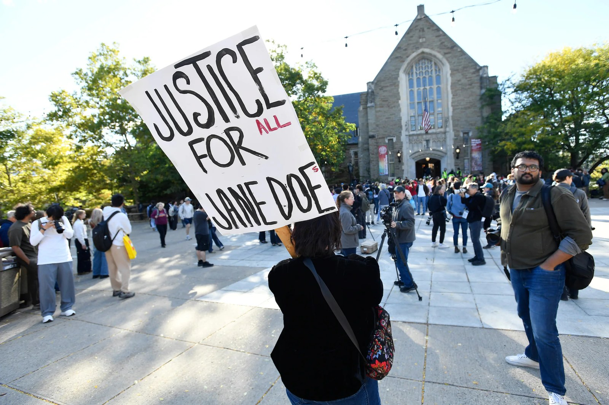

Imagen: Adrian Kraus/AP
Según datos de Pew Research Center publicados en 2024, 47% de las mujeres de entre 25 y 34 años en Estados Unidos cuenta con al menos una licenciatura, frente a 37% de los hombres del mismo grupo de edad. En 1995, la proporción era de 25% para ambos.
Estos datos muestran cómo las mujeres han ganado terreno en el acceso a la educación superior, un avance que ha requerido décadas de esfuerzos y luchas. Sin embargo, este progreso no siempre ha estado acompañado de condiciones que garanticen su seguridad dentro de las instituciones educativas.
Un caso reciente es el de una exestudiante de la Universidad de Cornell, identificada bajo el seudónimo de Jane Doe, quien en septiembre de 2026 presentó una demanda civil contra la universidad, la fraternidad Chi Phi, siete de sus integrantes y otras partes.
En su demanda, Jane Doe relata que fue violada por integrantes de la fraternidad Chi Phi en octubre de 2024. Su testimonio también describe la presencia de alcohol y otras sustancias durante los hechos.
Los hechos fueron reportados ante la policía universitaria. Cornell realizó una investigación interna e impuso sanciones disciplinarias, pero la fiscalía local decidió inicialmente no presentar cargos penales. En septiembre de 2026, la investigación penal fue reabierta y, posteriormente, la gobernadora de Nueva York, Kathy Hochul, designó a la fiscal general Letitia James como fiscal especial a cargo del caso.
Esta intervención puso nuevamente bajo escrutinio la actuación de las autoridades y las posibles deficiencias de la investigación inicial, así como la capacidad de las instituciones para atender adecuadamente las denuncias de violencia sexual.
En Sex and World Peace, Valerie M. Hudson y coautores exploran la relación entre la seguridad de las mujeres y la paz de las sociedades. Desde esta perspectiva, los avances en el acceso a la educación superior resultan insuficientes si persisten formas de violencia que impiden a las mujeres ejercer plenamente sus derechos. La responsabilidad de las universidades adquiere así una dimensión que trasciende el ámbito educativo.
El caso de Cornell, que continúa bajo investigación, recuerda que la seguridad de las estudiantes sigue siendo una condición indispensable para ejercer plenamente su derecho a la educación. Mientras la violencia contra las mujeres siga limitando el ejercicio de sus derechos, difícilmente podremos hablar de sociedades verdaderamente pacíficas.
CIPMEX · Centro de Investigación para la Paz México, A.C. · Paz que se piensa, paz que se construye